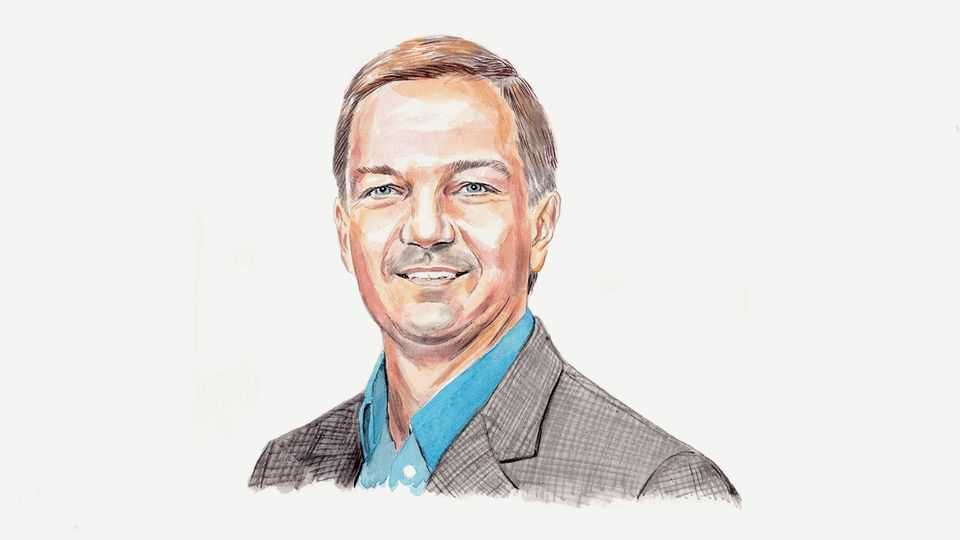

There’s a physical version of the AI singularity, and it matters a lot
The world is entering an era of supercharged industrial capacity with fast-shrinking human input, reckons Jeff Schneider

Oct 1st 2026
In recent weeks concern has exploded over artificial superintelligence as a result of surprising and alarming behaviour by AI agents. The fears are centred on the futuristic story about an “AI singularity”: artificial intelligence will eventually cross a threshold where it improves itself at an exponentially increasing pace and leaves humans behind as the curve goes vertical. But there is another singularity that should be receiving more attention. It is more tangible, already under way and likely to have big geopolitical implications sooner. This is the “physical singularity”.
Humans already rely on machines to do many manual tasks. They are force multipliers on human labour, allowing us to physically modify our world at a greater rate than we could with only our own hands. As our machines become more capable, the fraction of human effort needed will continue to fall towards zero. Warehouses increasingly operate with minimal human intervention. Much mining equipment is autonomous. Construction sites employ robotic systems. Individually, though, these are incremental improvements.
There will, however, be a critical threshold that is reached before human effort falls to zero. It will come after design, logistics, manufacturing and deployment are integrated into a system that automates the growth of productive capacity, and does so with a decreasing reliance on human labour. Beyond machines doing resource extraction, transporting and building, imagine robots building the factories where they then go and build more robots. They will not only be transforming the physical world. At an exponentially increasing rate, they will expand the system that transforms it. At some point in the next decade or two, human labour will no longer be a major constraint on how quickly industrial capacity grows. That will transform the economics of growth.
A traditional industrial economy grows linearly: human labour, raw materials, energy and capital investment set and constrain the rate of expansion. Economic surveys across rich countries consistently cite shortages of labour as a factor limiting industrial utilisation. At the physical singularity, by contrast, recursive scaling allows each incremental expansion of capacity to speed up the next without human labour constraints pushing the other way.
This does not mean physical production becomes infinite or that other constraints disappear. Energy, materials and capital still matter. However, removing human labour as a bottleneck changes how quickly those constraints are reached and then mitigated.
Today, attempts to expand energy or resource production eventually encounter a labour bottleneck. Building a power plant, expanding an electrical grid, operating a mine or erecting a factory requires workers. An increasingly autonomous industrial system reduces these labour constraints itself. Greater industrial capacity makes activities that are uneconomic today increasingly practical to exploit.
This highlights an interesting asymmetry. Without a physical singularity, the constraints of energy, resources and capital can indeed prevent the AI singularity from taking off. The opposite is not true. Achieving a physical singularity requires only a sufficient threshold of AI, not an infinite amount. It needs only enough AI to enable machines to reproduce themselves and expand their ability to transform the world: not recursive increase in intelligence, but recursive expansion of industrial capacity. I believe we are approaching that level today.
The AI singularity comes with legitimate concerns about control—the fear that independent agents may pursue goals that harm humanity. The physical singularity, however, does not require machine agency in that sense. It is freedom from the limits of human labour capacity, not from human control altogether, that allows machines to develop ever accelerating industrial capacity.
This raises the stakes. A system that rapidly increases its own productive capacity is an asset of unprecedented magnitude. Whoever controls its design and deployment gains both an economic advantage and compounding material power.
We are not there yet, and the investments we make now affect how quickly we approach the physical singularity. Physical AI presents many new challenges. Physical systems are uniquely intolerant of errors. Chatbots that produce good outputs 90% of the time are still useful, but a self-driving car that safely navigates 90% of intersections is dangerous. That is why governments thinking about AI should look beyond models, chips and data centres. Robotics, autonomous vehicles, mining, energy, manufacturing and construction are just as important. These are the technologies that connect AI to physical power.
Once industrial expansion becomes self-sustaining, early advantages keep compounding. Specific countries or companies could develop irreversible advantages. The past few decades saw manufacturing power shift to places that could mobilise cheaper labour, causing both great new wealth and economic depredation. By making labour less of a factor, the physical singularity will cause another such shift. The impact will not be purely economic. In the war in Ukraine, people are already being replaced by machines on the front line, raising the prospect that future defence will be dominated by whoever can manufacture the most machines.
As the debate on the AI singularity intensifies, it is time to give more thought to the other decisive race of the AI era: not over intelligence, but over which society builds the machines that recursively build the physical world. The consequences could hardly be more concrete. ■
Jeff Schneider is a professor of robotics and AI at Carnegie Mellon University.